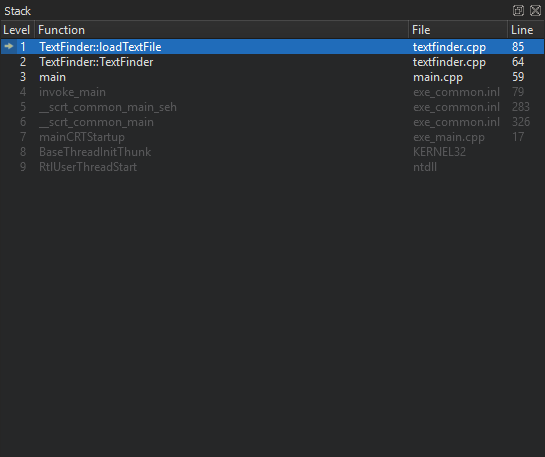

Viewing call stack trace
When the application being debugged is interrupted, Qt Creator displays the nested function calls leading to the current position as a call stack trace. This stack trace is built up from call stack frames, each representing a particular function. For each function, Qt Creator tries to retrieve the file name and line number of the corresponding source file. This data is shown in the Stack view.

Since the call stack leading to the current position may originate or go through code for which no debug information is available, not all stack frames have corresponding source locations. Stack frames without corresponding source locations are grayed out.
If you select a frame with a known source location, the text editor jumps to the corresponding location and updates the Locals and Expressions views, making it seem like the application was interrupted before entering the function.
Loading QML stack
To find out which QML file is causing a Qt Quick application to crash, select Load QML Stack in the context menu in the Stack view. The debugger tries to retrieve the JavaScript stack from the stopped executable and prepends the frames to the C++ frames, should it find any. You can select a frame in the QML stack to open the QML file in the editor.
See also How To: Debug, Debugging, Debuggers, and Debugger.